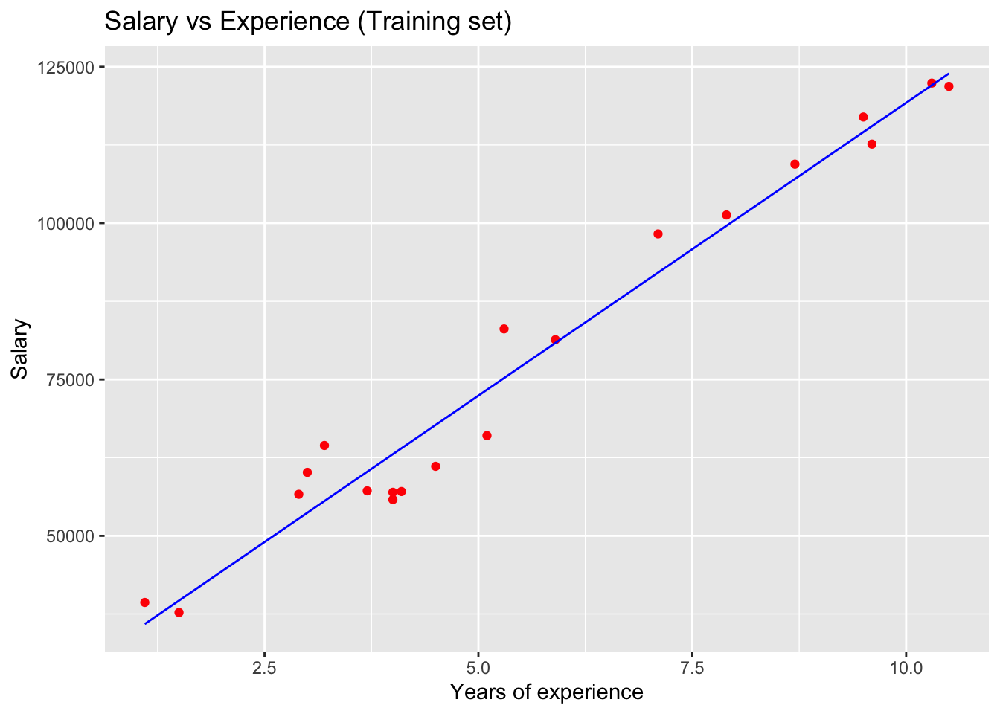
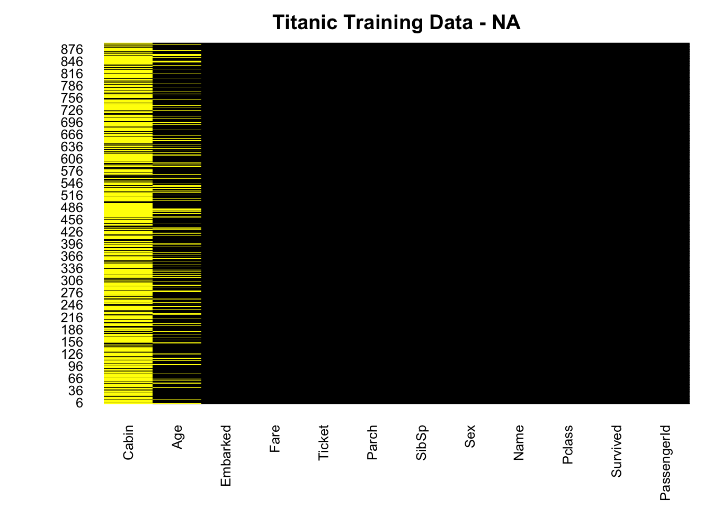
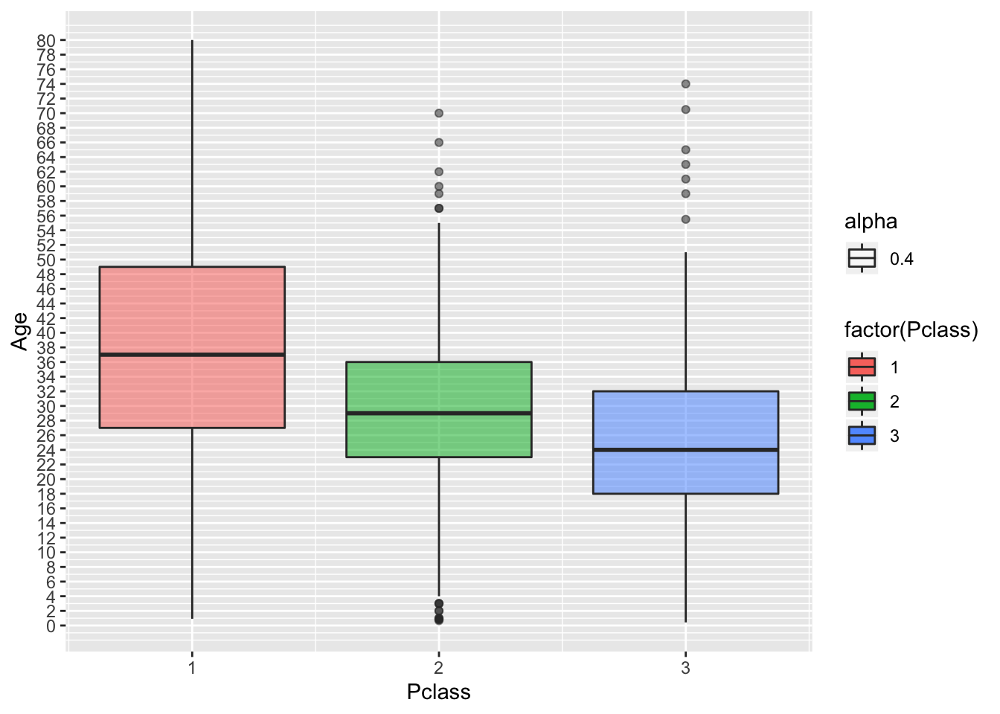
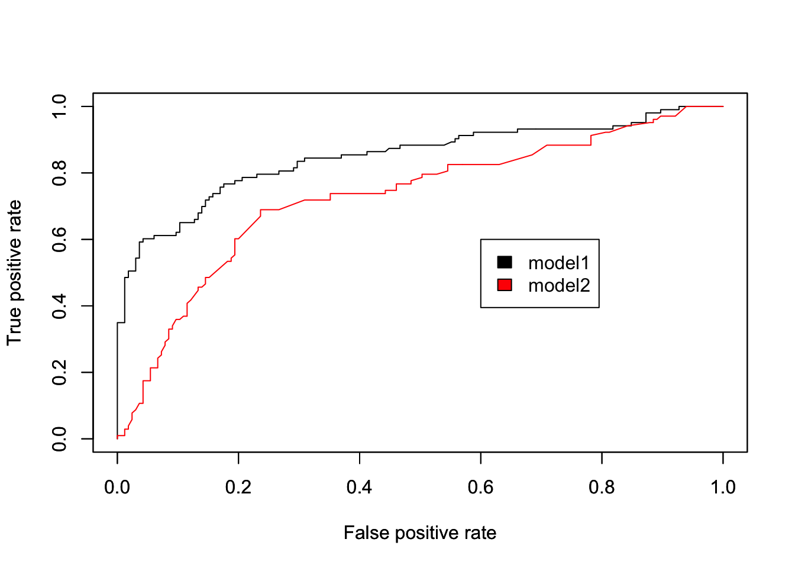
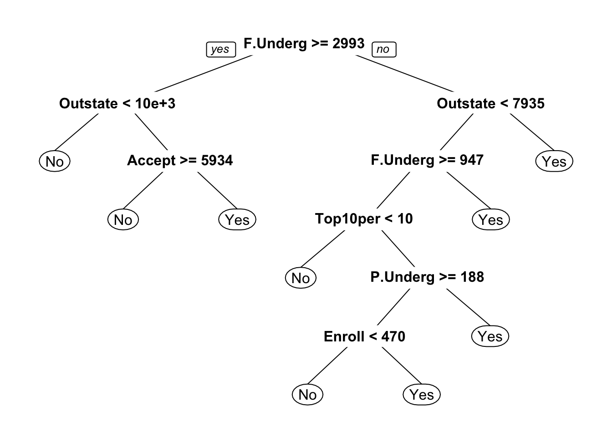

Chapter 11 Modeling
11.1 Regression Model (회귀모형)
11.1.1 Univariate Linear Regression (단변량 선형회기모형)
변수가 하나일때의 선형회귀를 단변량 선형 회귀 라고 합니다.
데이터을 가져오고 , 훈련데이터 및 테스트 데이터로 분할
# Univariate Linear Regression (단변량 선형회기모형)
library(tidyverse)
# 데이터셋 읽기
dataset = read_csv('Salary_Data.csv')
# 데이터셋을 Training set 과 Test set 으로 분할 합니다.
# install.packages('caTools')
library(caTools)
set.seed(123)
split = sample.split(dataset$Salary, SplitRatio = 2/3)
training_set = subset(dataset, split == TRUE)
test_set = subset(dataset, split == FALSE)- feature 스케일링 및 모델 핏팅
# Feature 스케일링
# training_set = scale(training_set)
# test_set = scale(test_set)
# Training 데이터를 단변량 선형회기 함수에 핏팅 합니다.
regressor = lm(formula = Salary ~ YearsExperience,
data = training_set)- 모델에 대한 정보를 보기 위해 summary 함수를 호출하면 모델에 대한 다양한 통계 정보를 확인 할수 있습니다.
| 항목 | 설명 |
|---|---|
| Residuals(잔차) | 예측과 실측 사이의 잔차에 대한 분포를 보여 줍니다 |
| Coefficients(계수) | 각각의 변수에 대한 P value 정보를 보여 줍니다. * 가 많으면 통계적으로 유의 |
| Signif | P Value 에 따른 Significant Levle 구간을 표시 합니다. |
| R-Squard | 만들어진 모델이 얼마나 데이터를 잘 설명하는지를 보여주는 지표 |
summary(regressor)##
## Call:
## lm(formula = Salary ~ YearsExperience, data = training_set)
##
## Residuals:
## Min 1Q Median 3Q Max
## -7325.1 -3814.4 427.7 3559.7 8884.6
##
## Coefficients:
## Estimate Std. Error t value Pr(>|t|)
## (Intercept) 25592 2646 9.672 1.49e-08 ***
## YearsExperience 9365 421 22.245 1.52e-14 ***
## ---
## Signif. codes: 0 '***' 0.001 '**' 0.01 '*' 0.05 '.' 0.1 ' ' 1
##
## Residual standard error: 5391 on 18 degrees of freedom
## Multiple R-squared: 0.9649, Adjusted R-squared: 0.963
## F-statistic: 494.8 on 1 and 18 DF, p-value: 1.524e-14- 테스트 데이터를 모델에 넣어서 scoring 수행
y_pred = predict(regressor, newdata = test_set)
y_pred## 1 2 3 4 5 6 7
## 37766.77 44322.33 46195.35 55560.43 62115.99 71481.07 81782.66
## 8 9 10
## 89274.72 102385.84 109877.90- 훈련 데이터 데이터에 대해 모델 그려보기
library(ggplot2)
ggplot() +
geom_point(aes(x = training_set$YearsExperience, y = training_set$Salary),
colour = 'red') +
geom_line(aes(x = training_set$YearsExperience, y = predict(regressor, newdata = training_set)),
colour = 'blue') +
ggtitle('Salary vs Experience (Training set)') +
xlab('Years of experience') +
ylab('Salary')
- 테스트 데이터에 대해 모델 그려보기
- 산점도(데이터)는 test_set 으로 선그래프(model)는 training_set 으로 그립니다.
# 테스트 데이터에 대해 모델 그려보기
library(ggplot2)
ggplot() +
geom_point(aes(x = test_set$YearsExperience, y = test_set$Salary),
colour = 'red') +
geom_line(aes(x = training_set$YearsExperience, y = predict(regressor, newdata = training_set)),
colour = 'blue') +
ggtitle('Salary vs Experience (Test set)') +
xlab('Years of experience') +
ylab('Salary')
11.1.2 Multivariate Linear Regression (다변량 선형회기모형)
- 여러개의 X 변수에 대한 회귀를 다변량 선형 회귀 라고 합니다.
# Multivariate Linear Regression (다변량 선형회기모형)
# 데이터셋 읽기
library(tidyverse)
dataset = read_csv('50_Startups.csv')
# 범주형 데이터에 대해 원핫인코딩 합니다.
dataset$State = factor(dataset$State,
levels = c('New York', 'California', 'Florida'),
labels = c(1, 2, 3))
# 데이터셋을 Training set 과 Test set 으로 분할 합니다.
# install.packages('caTools')
library(caTools)
set.seed(123)
split = sample.split(dataset$Profit, SplitRatio = 0.8)
training_set = subset(dataset, split == TRUE)
test_set = subset(dataset, split == FALSE)
# Feature 스케일링
# training_set = scale(training_set)
# test_set = scale(test_set)
# 훈련 데이터를 다변량 회귀에 핏팅 합니다.
regressor = lm(formula = Profit ~ .,
data = training_set)
summary(regressor)##
## Call:
## lm(formula = Profit ~ ., data = training_set)
##
## Residuals:
## Min 1Q Median 3Q Max
## -33128 -4865 5 6098 18065
##
## Coefficients:
## Estimate Std. Error t value Pr(>|t|)
## (Intercept) 4.965e+04 7.637e+03 6.501 1.94e-07 ***
## `R&D Spend` 7.986e-01 5.604e-02 14.251 6.70e-16 ***
## Administration -2.942e-02 5.828e-02 -0.505 0.617
## `Marketing Spend` 3.268e-02 2.127e-02 1.537 0.134
## State2 1.213e+02 3.751e+03 0.032 0.974
## State3 2.376e+02 4.127e+03 0.058 0.954
## ---
## Signif. codes: 0 '***' 0.001 '**' 0.01 '*' 0.05 '.' 0.1 ' ' 1
##
## Residual standard error: 9908 on 34 degrees of freedom
## Multiple R-squared: 0.9499, Adjusted R-squared: 0.9425
## F-statistic: 129 on 5 and 34 DF, p-value: < 2.2e-16# 만들어진 모델을 이용해 테스트 데이터에 대해 스코어링 수행
y_pred = predict(regressor, newdata = test_set)
y_pred## 1 2 3 4 5 6 7
## 173981.09 172655.64 160250.02 135513.90 146059.36 114151.03 117081.62
## 8 9 10
## 110671.31 98975.29 96867.0311.1.3 Polynomial Regression (다항 선형회기모형)
# Polynomial Regression (다항 선형회기모형)
# 데이터 읽기
dataset = read.csv('Position_Salaries.csv')
dataset## Position Level Salary
## 1 Business Analyst 1 45000
## 2 Junior Consultant 2 50000
## 3 Senior Consultant 3 60000
## 4 Manager 4 80000
## 5 Country Manager 5 110000
## 6 Region Manager 6 150000
## 7 Partner 7 200000
## 8 Senior Partner 8 300000
## 9 C-level 9 500000
## 10 CEO 10 1000000dataset = dataset[2:3]
# Splitting the dataset into the Training set and Test set
# # install.packages('caTools')
# library(caTools)
# set.seed(123)
# split = sample.split(dataset$Salary, SplitRatio = 2/3)
# training_set = subset(dataset, split == TRUE)
# test_set = subset(dataset, split == FALSE)
# Feature Scaling
# training_set = scale(training_set)
# test_set = scale(test_set)
# Fitting Linear Regression to the dataset
lin_reg = lm(formula = Salary ~ .,
data = dataset)
# Fitting Polynomial Regression to the dataset
dataset$Level2 = dataset$Level^2
dataset$Level3 = dataset$Level^3
dataset$Level4 = dataset$Level^4
poly_reg = lm(formula = Salary ~ .,
data = dataset)
# Visualising the Linear Regression results
# install.packages('ggplot2')
library(ggplot2)
ggplot() +
geom_point(aes(x = dataset$Level, y = dataset$Salary),
colour = 'red') +
geom_line(aes(x = dataset$Level, y = predict(lin_reg, newdata = dataset)),
colour = 'blue') +
ggtitle('Truth or Bluff (Linear Regression)') +
xlab('Level') +
ylab('Salary')
# Visualising the Polynomial Regression results
# install.packages('ggplot2')
library(ggplot2)
ggplot() +
geom_point(aes(x = dataset$Level, y = dataset$Salary),
colour = 'red') +
geom_line(aes(x = dataset$Level, y = predict(poly_reg, newdata = dataset)),
colour = 'blue') +
ggtitle('Truth or Bluff (Polynomial Regression)') +
xlab('Level') +
ylab('Salary')# Visualising the Regression Model results (for higher resolution and smoother curve)
# install.packages('ggplot2')
library(ggplot2)
x_grid = seq(min(dataset$Level), max(dataset$Level), 0.1)
ggplot() +
geom_point(aes(x = dataset$Level, y = dataset$Salary),
colour = 'red') +
geom_line(aes(x = x_grid, y = predict(poly_reg,
newdata = data.frame(Level = x_grid,
Level2 = x_grid^2,
Level3 = x_grid^3,
Level4 = x_grid^4))),
colour = 'blue') +
ggtitle('Truth or Bluff (Polynomial Regression)') +
xlab('Level') +
ylab('Salary')# Predicting a new result with Linear Regression
predict(lin_reg, data.frame(Level = 6.5))## 1
## 330378.8# Predicting a new result with Polynomial Regression
predict(poly_reg, data.frame(Level = 6.5,
Level2 = 6.5^2,
Level3 = 6.5^3,
Level4 = 6.5^4))## 1
## 158862.511.2 Classification Model (분류모형)
11.2.1 Logistic Regression
Logistic Regression 실습에서는 Kagge 타이타닉 데이터 로 모델 실습을 하겠습니다. 승객 들의 여러가지 정보를 바탕으로 Logistic Regression 을 바탕으로 생존 예측을 해보도록 하겠습니다.
데이터 불러오기
library(tidyverse)
df.train <- read_csv('titanic_train.csv')11.2.1.1 Amelia 패키지를 이용한 결측치 시각화
현재 타이타닉 데이터 셋의 age(나이) 컬럼은 NA 값이 존재 합니다. 얼마나 존재 하는 지 확인하기 위해 Amelias 패키지를 통해 NA 값을 시각화 합니다.
# is.na(df.train) # is.na 합수는 전체 데이터에 대해 TRUE FALSE 로 보여 주기 때문에 한번에 알아보기가 힘듭니다.
# install.packages("Amelia")
library(Amelia)
missmap(df.train, main="Titanic Training Data - NA",
col=c("yellow", "black"), legend=FALSE)
- Cabin(선실), Age(나이) 값들에 NA 가 존재 합니다. Age 데이터의 경우 약 20% 정도가 결측(NA) 가 있습니다. 일단 NA 값이 어떠한 분포로 얼마나 많이 있는지 시각화를 했습니다. 이후 과정에서 결측(NA)치 를 처리 할 것입니다.
11.2.1.2 ggplot2 를 이용한 데이터 시각화
- 생존/사망의 비율을 시각화 해봅니다.
ggplot(df.train,aes(Survived)) + geom_bar()
- 승객 Pclass(등급) 별로 몇명이 있는지 확인 해봅니다.
df.train %>% ggplot(aes(Pclass)) + geom_bar(aes(fill=factor(Pclass)),alpha=0.5)- 승객의 성(Sex) 비율이 어덯게 되는지 봅니다.
df.train %>% ggplot(aes(Sex)) + geom_bar(aes(fill=factor(Sex)),alpha=0.5)
df.train %>% ggplot(aes(Age)) + geom_histogram(fill='blue',bins=20,alpha=0.5)
- SibSp(동승자)가 몇명이나 되는지 확인 합시다.
df.train %>% ggplot(aes(Fare)) + geom_histogram(fill='green',color='black',alpha=0.5)11.2.1.3 데이터 클린징
- 앞서 age 데이터에 결측(NA) 값이 20% 정도 발견이 되었습니다.
- 직관적으로 승객의 나이가 생존 여부와 상관이 있을것 같기 때문에 age 변수를 없애거나 입의이 값으로 대체 해야 합니다.
- 결측된 age 컬럼을 가진 관측치를 없애기에는 데이터가 조금(20%) 많습니다.
- Age 값을 전체 데이터의 평균 값으로 넣어도 되지만, 좀더 모델을 성능을 높이기 위해 Age 와 상관 있는 변수가 무엇인지 고민해 보면 Pclass(승객등급) 별로 나이가 다를 것 같습니다. 일단 그려 봅니다.
df.train %>% ggplot(aes(Pclass,Age)) +
geom_boxplot(aes(group=Pclass,fill=factor(Pclass),alpha=0.4)) +
scale_y_continuous(breaks = seq(min(0), max(80), by = 2))
- 그래프를 확인해보면 객실 등급별로 전체 적인 평균 나이가 차이가 납니다.
Age(나이)에 대한 결측치를 Pclass(승객등급) 의 평균 나이로 설정하면 좀더 정확한 모델을 만들수 있습니다.
- 아래 함수는 결측치가 있을 경우 해당하는 사람의 승객등급을 확인하고 앞서 확인한 승객 등급별 평균 나이를 반환하는 함수 입니다.
returunPclassAge <- function(age,class){
out <- age
for (i in 1:length(age)){
if (is.na(age[i])){
if (class[i] == 1){
out[i] <- 37
}else if (class[i] == 2){
out[i] <- 29
}else{
out[i] <- 24
}
}else{
out[i]<-age[i]
}
}
return(out)
}df.train <- df.train %>% mutate(Age = returunPclassAge(Age, Pclass))- 다시 Amelia 패키지의 missmap 한수를 돌려 결측치를 확인합니다.
missmap(df.train, main="Titanic Training Data - NA",
col=c("yellow", "black"), legend=FALSE)- Age 변수의 결측(NA) 들을 Pclass(승객등급) 별 평균 나이로 설정 하여 결측치를 제거 하였습니다.
11.2.1.4 모델 학습을 위한 데이터 전처리
- 불필요한 변수를 제거 합니다. 물론, 제거 하지 않고 p value 를 확인해서 나중에 fitting 과정에서 제거 해도 됩니다.
str(df.train)## Classes 'spec_tbl_df', 'tbl_df', 'tbl' and 'data.frame': 891 obs. of 12 variables:
## $ PassengerId: num 1 2 3 4 5 6 7 8 9 10 ...
## $ Survived : num 0 1 1 1 0 0 0 0 1 1 ...
## $ Pclass : num 3 1 3 1 3 3 1 3 3 2 ...
## $ Name : chr "Braund, Mr. Owen Harris" "Cumings, Mrs. John Bradley (Florence Briggs Thayer)" "Heikkinen, Miss. Laina" "Futrelle, Mrs. Jacques Heath (Lily May Peel)" ...
## $ Sex : chr "male" "female" "female" "female" ...
## $ Age : num 22 38 26 35 35 24 54 2 27 14 ...
## $ SibSp : num 1 1 0 1 0 0 0 3 0 1 ...
## $ Parch : num 0 0 0 0 0 0 0 1 2 0 ...
## $ Ticket : chr "A/5 21171" "PC 17599" "STON/O2. 3101282" "113803" ...
## $ Fare : num 7.25 71.28 7.92 53.1 8.05 ...
## $ Cabin : chr NA "C85" NA "C123" ...
## $ Embarked : chr "S" "C" "S" "S" ...head(df.train,3)## # A tibble: 3 x 12
## PassengerId Survived Pclass Name Sex Age SibSp Parch Ticket Fare
## <dbl> <dbl> <dbl> <chr> <chr> <dbl> <dbl> <dbl> <chr> <dbl>
## 1 1 0 3 Brau… male 22 1 0 A/5 2… 7.25
## 2 2 1 1 Cumi… fema… 38 1 0 PC 17… 71.3
## 3 3 1 3 Heik… fema… 26 0 0 STON/… 7.92
## # … with 2 more variables: Cabin <chr>, Embarked <chr># 데이터 셋에서 PassengerId, Name, Ticket, Cabin 컬럼을 제거 합니다.
df.train <- df.train %>% select(-PassengerId,-Name,-Ticket,-Cabin)
head(df.train,3)## # A tibble: 3 x 8
## Survived Pclass Sex Age SibSp Parch Fare Embarked
## <dbl> <dbl> <chr> <dbl> <dbl> <dbl> <dbl> <chr>
## 1 0 3 male 22 1 0 7.25 S
## 2 1 1 female 38 1 0 71.3 C
## 3 1 3 female 26 0 0 7.92 S- 문자현 변수들에 대해 범주형으로 바꿔 줍니다. 범주형 변수(Factor) 로 바꿔주면 Level이 생기고 나중에 Pvalue 값를 확인할때 Level 에 대한 Pvalue 를 자동으로 만들어 줍니다.
- Survived, Pclass, Parch, SibSp 문자형 변수에 대해 Factor 로 변환 합니다.
str(df.train)## Classes 'spec_tbl_df', 'tbl_df', 'tbl' and 'data.frame': 891 obs. of 8 variables:
## $ Survived: num 0 1 1 1 0 0 0 0 1 1 ...
## $ Pclass : num 3 1 3 1 3 3 1 3 3 2 ...
## $ Sex : chr "male" "female" "female" "female" ...
## $ Age : num 22 38 26 35 35 24 54 2 27 14 ...
## $ SibSp : num 1 1 0 1 0 0 0 3 0 1 ...
## $ Parch : num 0 0 0 0 0 0 0 1 2 0 ...
## $ Fare : num 7.25 71.28 7.92 53.1 8.05 ...
## $ Embarked: chr "S" "C" "S" "S" ...df.train$Survived <- factor(df.train$Survived)
df.train$Pclass <- factor(df.train$Pclass)
df.train$Parch <- factor(df.train$Parch)
df.train$SibSp <- factor(df.train$SibSp)11.2.1.5 훈련데이터와 테스트 데이터 나누기
library(caTools)
set.seed(101)
split = sample.split(df.train$Survived, SplitRatio = 0.70)
final.train = subset(df.train, split == TRUE)
final.test = subset(df.train, split == FALSE)final.log.model1 <- glm(formula=Survived ~ . , family = binomial(link='logit'),data = final.train)
summary(final.log.model1)##
## Call:
## glm(formula = Survived ~ ., family = binomial(link = "logit"),
## data = final.train)
##
## Deviance Residuals:
## Min 1Q Median 3Q Max
## -2.8315 -0.5604 -0.4093 0.6175 2.4904
##
## Coefficients:
## Estimate Std. Error z value Pr(>|z|)
## (Intercept) 3.804e+00 6.208e-01 6.128 8.89e-10 ***
## Pclass2 -1.236e+00 3.812e-01 -3.243 0.001183 **
## Pclass3 -2.166e+00 3.839e-01 -5.642 1.68e-08 ***
## Sexmale -2.666e+00 2.465e-01 -10.814 < 2e-16 ***
## Age -3.836e-02 1.035e-02 -3.708 0.000209 ***
## SibSp1 -2.380e-02 2.756e-01 -0.086 0.931185
## SibSp2 -4.016e-01 6.466e-01 -0.621 0.534536
## SibSp3 -2.329e+00 9.000e-01 -2.588 0.009649 **
## SibSp4 -1.196e+00 8.305e-01 -1.440 0.149805
## SibSp5 -1.603e+01 9.589e+02 -0.017 0.986662
## SibSp8 -1.633e+01 1.003e+03 -0.016 0.987012
## Parch1 7.287e-01 3.548e-01 2.054 0.040007 *
## Parch2 1.368e-01 4.506e-01 0.304 0.761476
## Parch3 7.904e-01 1.229e+00 0.643 0.520061
## Parch4 -1.498e+01 1.551e+03 -0.010 0.992294
## Parch5 -1.221e-02 1.379e+00 -0.009 0.992935
## Parch6 -1.635e+01 2.400e+03 -0.007 0.994563
## Fare 3.145e-03 3.097e-03 1.015 0.309957
## EmbarkedQ 1.019e-01 4.509e-01 0.226 0.821153
## EmbarkedS -3.269e-01 2.905e-01 -1.125 0.260600
## ---
## Signif. codes: 0 '***' 0.001 '**' 0.01 '*' 0.05 '.' 0.1 ' ' 1
##
## (Dispersion parameter for binomial family taken to be 1)
##
## Null deviance: 829.60 on 622 degrees of freedom
## Residual deviance: 530.82 on 603 degrees of freedom
## AIC: 570.82
##
## Number of Fisher Scoring iterations: 15- 테스트 데이터로 스코어링 수행
fitted.probabilities1 <- predict(final.log.model1,newdata=final.test,type='response')- 스코어링 결과에서 0.5 가 넘는 것(생존)은 1, 0.5 이하(사망)은 0 으로
fitted.results1 <- ifelse(fitted.probabilities1 > 0.5,1,0)- 스코어링 결과 와 테스트 데이터의 라벨을 비교해서 오분류율을 구하고 1에서 오분류 율을 빼서 정답율 을 구합니다.
misClasificError <- mean(fitted.results1 != final.test$Survived)
print(paste('Accuracy',1-misClasificError))## [1] "Accuracy 0.798507462686567"table(final.test$Survived, fitted.probabilities1 > 0.5)##
## FALSE TRUE
## 0 140 25
## 1 29 7411.2.1.6 모델 평가
- 모델평가를 테스트로 하기 휘해서 Logistic Regression 에서 특정 변수만 넣어서서 모델을 하나 더 만들고 기존 모델과 성능을 평가해 보도록 하겠습니다.
#install.packages("ROCR")
library(ROCR) # ROC 커브를 그리기 위한 패키지
# 두번째 모델을 훈련 시킵니다.
final.log.model2 <- glm(formula=Survived ~ Pclass + Fare , family = binomial(link='logit'),data = final.train)
# 테스트 데이터로 동일하게 스코어링 수행
fitted.probabilities2 <- predict(final.log.model2,newdata=final.test,type='response')- 이제부터는 prediction 함수를 이용해서 라벨(정답) 값에 대한 예측정확도를 구합니다.
- 첫번째 모델과 두번째 모델을 모두 구합니다.
predict1 <- prediction(fitted.probabilities1 , final.test$Survived )
predict2 <- prediction(fitted.probabilities2 , final.test$Survived )- 정확도를 이용해서 Performance 함수를 이용해서 모델의 성능을 구합니다. 여기서 말하는 성능은 Confusion Matrix 에서 TPR(민감도) FPR(특이도) 을 반환 합니다.
# 첫번째 모델에 대한 ROC 커브를 그립니다.
perf1 <- performance(predict1, "tpr", "fpr")
perf2 <- performance(predict2, "tpr", "fpr")
# 2개의 ROC 곡선을 하나의 차트에 그립니다.
plot(perf1, col=1)
par(new=T) # 첫번째 차트에 추가 해도됨.(같이 겹쳐그리기 위해)
plot(perf2, col=2)
legend(0.6,0.6, c("model1", "model2"), 1:2)
- 실제 model 2 오분류 율을 확인해 봅니다.
11.2.2 K-Nearest Neighbors(K-NN)
- KNN 을 적용하여 수집된 정보를 바탕으로 고객이 Caraban 을 살것인지 말것인지를 예측하는 실습 을 해보겠습니다.
11.2.2.1 데이터 다운로드
- 데이터는 ISLR 패키지에 있습니다. 설치 하고 library 함수를 이용해 불러옵니다.
install.packages('ISLR',repos = 'http://cran.us.r-project.org')##
## The downloaded binary packages are in
## /var/folders/qx/j_2_gqz94yg0nsdycn8_rtlm0000gn/T//RtmpmwkpDh/downloaded_packageslibrary(ISLR)11.2.2.2 데이터 정규화(Scaling)
- KNN 은 가까운 이웃간의 공간 거리로 분류를 하는 모델이기 때문에 데이터 표준화가 매우 중요합니다.
- 첫번째, 두번째 데이터의 분포(Variance) 를 확인해보면 차이가 큽니다.
# 첫번때 Feature 와 두번째 Feature 의 데이터 분포를 확인 합니다.
var(Caravan[,1]) # 데이터 분포(Variance) 를 확인합니다.## [1] 165.0378var(Caravan[,2]) # 데이터 분포(Variance) 를 확인합니다.## [1] 0.1647078- 레이블(정답) 데이터를 제외함 모든 데이터에 대해 정규화를 수행합니다.
# 레이블 컬럼을 따로 저장 해둡니다.
stdCaraban <- Caravan %>% mutate_at(vars(-Purchase), scale)
var(stdCaraban[,1])## [,1]
## [1,] 1var(stdCaraban[,2])## [,1]
## [1,] 111.2.2.3 훈련데이터와 테스트 데이터 나누기
- knn 모델 함수는 인자로 훈련데이터, 테스트 데이터, 훈련데이터 레이블 을 받습니다.
- 일반적인 머신러닝 함수들은 훈련데이터에 레이블을 포함해서 받지만, knn 함수는 따로 분리해서 인자를 받기 때문에 데이터셋을 나룰때 레이블도 같이 나누어 주어야 합니다.
library(caTools)
set.seed(101)
split = sample.split(stdCaraban$Purchase, SplitRatio = 0.70)
knn.train.data <- subset(stdCaraban, split == TRUE) # 훈련데이터 수집
knn.train.purchase <- knn.train.data$Purchase # 훈련데이터 레이블 따로 저장
knn.train.data <- knn.train.data %>% select_at(vars(-Purchase)) # 훈련데이터 에서 레이블 제거
knn.test.data <- subset(stdCaraban, split == FALSE) # 테스트데이터 수집
knn.test.purchase <- knn.test.data$Purchase # 테스트데이터 레이블 따로 저장
knn.test.data <- knn.test.data %>% select_at(vars(-Purchase)) # 테스트데이터 에서 레이블 제거11.2.2.4 KNN 모델 만들기
library(class)
knn.predicted.purchase1 <- knn(knn.train.data, knn.test.data, knn.train.purchase,k=1)
head(knn.predicted.purchase1)## [1] No No No Yes No No
## Levels: No Yes- 오분류 퍼센트를 알아봅니다.
mean(knn.test.purchase != knn.predicted.purchase1)## [1] 0.113402111.2.2.5 적당한 K 값찾기
- k 값을 3으로 주었을때
knn.predicted.purchase3 <- knn(knn.train.data, knn.test.data, knn.train.purchase,k=3)
mean(knn.test.purchase != knn.predicted.purchase3)## [1] 0.07216495- k 값을 5로 주었을때
knn.predicted.purchase5 <- knn(knn.train.data, knn.test.data, knn.train.purchase,k=5)
mean(knn.test.purchase != knn.predicted.purchase5)## [1] 0.0641466211.2.2.6 k 값 자동으로 찾기
우리가 1주차에 배운 for 루프를 써서 k 값을 자동으로 찾아 봅시다
knn.predicted.purchase = NULL
error.rate = NULL
for(i in 1:20){
knn.predicted.purchase = knn(knn.train.data, knn.test.data, knn.train.purchase,k=i)
error.rate[i] = mean(knn.test.purchase != knn.predicted.purchase)
}
print(error.rate)## [1] 0.11340206 0.10710195 0.07331042 0.07159221 0.06357388 0.06357388
## [7] 0.06071019 0.06071019 0.06071019 0.06128293 0.05956472 0.05956472
## [13] 0.05899198 0.05899198 0.05899198 0.05899198 0.05956472 0.05956472
## [19] 0.05956472 0.0595647211.2.2.7 Elbow 방법을 통한 k 값찾기
library(ggplot2)
k.values <- 1:20
error.df <- as_tibble(error.rate,k.values)
error.df## # A tibble: 20 x 1
## value
## <dbl>
## 1 0.113
## 2 0.107
## 3 0.0733
## 4 0.0716
## 5 0.0636
## 6 0.0636
## 7 0.0607
## 8 0.0607
## 9 0.0607
## 10 0.0613
## 11 0.0596
## 12 0.0596
## 13 0.0590
## 14 0.0590
## 15 0.0590
## 16 0.0590
## 17 0.0596
## 18 0.0596
## 19 0.0596
## 20 0.0596error.df %>% ggplot(aes(x=k.values,y=error.rate)) +
geom_point()+ geom_line(color='red') +
scale_x_continuous(breaks=seq(0, 20, 1))
11.2.3 Support Vector Machine(SVM)
- support vector Machine 을 이용해서 소셜광고 후에 나이와 연봉을 수집해서 제품을 구매 할 고객인지 아닌지 예측 하는 모델을 만들어 보겠습니다.
11.2.3.1 데이터셋 가져와서 테스트데이터와 훈련데이터 나누기
# Support Vector Machine (SVM)
# Importing the dataset
dataset = read.csv('Social_Network_Ads.csv')
#dataset
dataset = dataset[3:5]
# 레이블을 factor형으로 변형 합니다.
dataset$Purchased = factor(dataset$Purchased, levels = c(0, 1))
# 훈련데이터 와 테스트 데이터로 나누기
# install.packages('caTools')
library(caTools)
set.seed(123)
split = sample.split(dataset$Purchased, SplitRatio = 0.75) # 이번에는 0.75 로 나눠 봅니다.
svm.train.data = subset(dataset, split == TRUE)
svm.test.data = subset(dataset, split == FALSE)11.2.3.2 데이터 전처리
- svm 동일 하나의 공간에서 Support Vector 를 이용해서 구분하기 때문에 Feature 에 대한 Scale이 필요합니다.
# Feature 스케일링 : 이번에는 mutate 함수를 사용하지 않고 더간단한게 scale 함수를 적용합니다.
svm.train.data[-3] = scale(svm.train.data[-3])
svm.test.data[-3] = scale(svm.test.data[-3])
# Fitting SVM to the Training set
# install.packages('e1071')11.2.3.3 SVM(linear) 함수를 이용해서 모델 만들고 fitting 하기
- r 에서 제공하는 svm type 은 크게 4가지 종류가 있으며 svm-type 을 참조면 됩니다.
- kernel 함수를 linear 를 사용해서 고차원 커널 트릭을 사용하지 않는 것으로 모델을 만들어 봅니다.
#install.packages("e1071")
library(e1071)
svm.fitted.model1 = svm(formula = Purchased ~ .,
data = svm.train.data,
type = 'C-classification',
kernel = 'linear',
probability=TRUE)
# 테스트 데이터로 스코어링
svm.predicted.purchase1 = predict(svm.fitted.model1, newdata = svm.test.data[-3],decision.values=TRUE)11.2.3.4 예측 결과 테이블 확인
# Making the Confusion Matrix
cm1 = table(svm.test.data$Purchased, svm.predicted.purchase1)
cm1## svm.predicted.purchase1
## 0 1
## 0 57 7
## 1 13 2311.2.3.5 SVM(RBF) 함수를 이용해서 모델 만들고 fitting 하기
library(e1071)
svm.fitted.model2= svm(formula = Purchased ~ .,
data = svm.train.data,
type = 'C-classification',
kernel = 'radial', # RBF 커널 적용
probability=TRUE)
# 두번째 모델 테스트 데이터로 스코어링
svm.predicted.purchase2 = predict(svm.fitted.model2, newdata = svm.test.data[-3], decision.values=TRUE)
cm2= table(svm.test.data$Purchased, svm.predicted.purchase2)
cm2## svm.predicted.purchase2
## 0 1
## 0 58 6
## 1 4 3211.2.3.6 ROC 커브그리기
#install.packages("ROCR")
library(ROCR) # ROC 커브를 그리기 위한 패키지
#
svm.prob1<-attr(svm.predicted.purchase1,"decision.values")
svm.prob2<-attr(svm.predicted.purchase2,"decision.values")
predict1 <- prediction(svm.prob1 , svm.test.data$Purchased )
predict2 <- prediction(svm.prob2 , svm.test.data$Purchased )
# 각각의 모델의 대한 TRP/ FPR 은 구합니다.
perf1 <- performance(predict1, "fpr", "tpr")
perf2 <- performance(predict2, "fpr", "tpr")
# 2개의 ROC 곡선을 하나의 차트에 그립니다.
plot(perf1, col=1)
par(new=T) # 첫번째 차트에 추가 해도됨.(같이 겹쳐그리기 위해)
plot(perf2, col=2)
legend(0.6,0.6, c("svm.linear", "svm.rbf"), 1:2)
11.2.4 Decision Tree Classification
- Decision Tree 모델을 학습기위해 미국 대학교 정보를 바탕으로 사립 학교 인지 공립 하교 인지 맟추는 모델을 만들어 보겠습니다.
- college 데이터를 불러오기 위해 ISRL 라이브러리를 인스톨 하고 불러옵니다.
11.2.4.1 데이터셋 설명
데이터셋 설명
Private A factor with levels No and Yes indicating private or public university Apps Number of applications received Accept Number of applications accepted Enroll Number of new students enrolled Top10perc Pct. new students from top 10% of H.S. class Top25perc Pct. new students from top 25% of H.S. class F.Undergrad Number of fulltime undergraduates P.Undergrad Number of parttime undergraduates Outstate Out-of-state tuition Room.Board Room and board costs Books Estimated book costs Personal Estimated personal spending PhD Pct. of faculty with Ph.D.’s Terminal Pct. of faculty with terminal degree S.F.Ratio Student/faculty ratio perc.alumni Pct. alumni who donate Expend Instructional expenditure per student Grad.Rate Graduation rate
11.2.4.2 데이터 불러오고 EDA 수행하기
#install.packages("ISRL")
library(ISLR)
head(College)## Private Apps Accept Enroll Top10perc
## Abilene Christian University Yes 1660 1232 721 23
## Adelphi University Yes 2186 1924 512 16
## Adrian College Yes 1428 1097 336 22
## Agnes Scott College Yes 417 349 137 60
## Alaska Pacific University Yes 193 146 55 16
## Albertson College Yes 587 479 158 38
## Top25perc F.Undergrad P.Undergrad Outstate
## Abilene Christian University 52 2885 537 7440
## Adelphi University 29 2683 1227 12280
## Adrian College 50 1036 99 11250
## Agnes Scott College 89 510 63 12960
## Alaska Pacific University 44 249 869 7560
## Albertson College 62 678 41 13500
## Room.Board Books Personal PhD Terminal
## Abilene Christian University 3300 450 2200 70 78
## Adelphi University 6450 750 1500 29 30
## Adrian College 3750 400 1165 53 66
## Agnes Scott College 5450 450 875 92 97
## Alaska Pacific University 4120 800 1500 76 72
## Albertson College 3335 500 675 67 73
## S.F.Ratio perc.alumni Expend Grad.Rate
## Abilene Christian University 18.1 12 7041 60
## Adelphi University 12.2 16 10527 56
## Adrian College 12.9 30 8735 54
## Agnes Scott College 7.7 37 19016 59
## Alaska Pacific University 11.9 2 10922 15
## Albertson College 9.4 11 9727 55df <- College- 데이터 분포를 표시해보고, 숙식비용 과 졸업 비율을 이용해 사립학교와 공립학교를 구분 해봅니다.
#install.packages("psych")
library(psych)
describe(df) # psych 에서 제공## vars n mean sd median trimmed mad min
## Private* 1 777 1.73 0.45 2.0 1.78 0.00 1.0
## Apps 2 777 3001.64 3870.20 1558.0 2193.01 1463.33 81.0
## Accept 3 777 2018.80 2451.11 1110.0 1510.29 1008.17 72.0
## Enroll 4 777 779.97 929.18 434.0 575.95 354.34 35.0
## Top10perc 5 777 27.56 17.64 23.0 25.13 13.34 1.0
## Top25perc 6 777 55.80 19.80 54.0 55.12 20.76 9.0
## F.Undergrad 7 777 3699.91 4850.42 1707.0 2574.88 1441.09 139.0
## P.Undergrad 8 777 855.30 1522.43 353.0 536.36 449.23 1.0
## Outstate 9 777 10440.67 4023.02 9990.0 10181.66 4121.63 2340.0
## Room.Board 10 777 4357.53 1096.70 4200.0 4301.70 1005.20 1780.0
## Books 11 777 549.38 165.11 500.0 535.22 148.26 96.0
## Personal 12 777 1340.64 677.07 1200.0 1268.35 593.04 250.0
## PhD 13 777 72.66 16.33 75.0 73.92 17.79 8.0
## Terminal 14 777 79.70 14.72 82.0 81.10 14.83 24.0
## S.F.Ratio 15 777 14.09 3.96 13.6 13.94 3.41 2.5
## perc.alumni 16 777 22.74 12.39 21.0 21.86 13.34 0.0
## Expend 17 777 9660.17 5221.77 8377.0 8823.70 2730.95 3186.0
## Grad.Rate 18 777 65.46 17.18 65.0 65.60 17.79 10.0
## max range skew kurtosis se
## Private* 2.0 1.0 -1.02 -0.96 0.02
## Apps 48094.0 48013.0 3.71 26.52 138.84
## Accept 26330.0 26258.0 3.40 18.75 87.93
## Enroll 6392.0 6357.0 2.68 8.74 33.33
## Top10perc 96.0 95.0 1.41 2.17 0.63
## Top25perc 100.0 91.0 0.26 -0.57 0.71
## F.Undergrad 31643.0 31504.0 2.60 7.61 174.01
## P.Undergrad 21836.0 21835.0 5.67 54.52 54.62
## Outstate 21700.0 19360.0 0.51 -0.43 144.32
## Room.Board 8124.0 6344.0 0.48 -0.20 39.34
## Books 2340.0 2244.0 3.47 28.06 5.92
## Personal 6800.0 6550.0 1.74 7.04 24.29
## PhD 103.0 95.0 -0.77 0.54 0.59
## Terminal 100.0 76.0 -0.81 0.22 0.53
## S.F.Ratio 39.8 37.3 0.66 2.52 0.14
## perc.alumni 64.0 64.0 0.60 -0.11 0.44
## Expend 56233.0 53047.0 3.45 18.59 187.33
## Grad.Rate 118.0 108.0 -0.11 -0.22 0.62df %>% ggplot(aes(x=Room.Board,y=Grad.Rate)) + geom_point(aes(color=Private))
- 정규과정 재학생의 비율을 사립과 공립을 나누어 histogram 으로 빈도를 보겠습니다.
df %>% ggplot(aes(F.Undergrad)) +
geom_histogram(aes(fill=Private),color='black',bins=50)
- 졸업율이 100% 가 넘는 학교가 있습니다. 확인해보고 100으로 맞추겠습니다.
df <- df %>% mutate(Grad.Rate = if_else(Grad.Rate > 100, 100,Grad.Rate ))
#df11.2.4.3 훈련데이터 테스트 데이터 나누기
library(caTools)
set.seed(101)
sample = sample.split(df$Private, SplitRatio = 0.70)
tree.train.data = subset(df, sample == TRUE)
tree.test.data = subset(df, sample == FALSE)11.2.4.4 Decision Tree 를 이용한 모델 만들기
library(rpart)
tree.model <- rpart(Private ~.,method='class',data = tree.train.data)
tree.predict <- predict(tree.model,tree.test.data )
head(tree.predict)## No Yes
## 3 0.003311258 0.9966887
## 11 0.003311258 0.9966887
## 12 0.003311258 0.9966887
## 13 0.003311258 0.9966887
## 14 0.003311258 0.9966887
## 17 0.003311258 0.9966887- 데이터를 보게 되면 사립학교일 확율과 사립학교가 아닐 확율 2가지를 줍니다. 하나로 합쳐 보겠습니다.
tree.predict <- as_tibble(tree.predict)
tree.predict <- tree.predict %>%
mutate(Private = ifelse(Yes >= 0.5, 'Yes', 'No'))
# tree.predict- 오분류 비율을 출력합니다.
# Confusion Matrix 로 구해보기
table(tree.predict$Private,tree.test.data$Private)##
## No Yes
## No 57 9
## Yes 7 160# 퍼센트로 구해보기
misClasificError <- mean(tree.predict$Private != tree.test.data$Private)
print(paste('Accuracy',1-misClasificError))## [1] "Accuracy 0.931330472103004"11.2.4.5 dicision tree 모델 시각화 하기
- rpart 라이브러리 를 이요해서 시각화 합니다.
#install.packages("rpart.plot")
library(rpart)
library(rpart.plot)
prp(tree.model)
11.2.5 Random Forrest Classfication
- 동일한 데이터셋을 사용해서 Random Forrest 모델을 만들어 봅니다.
#install.packages("randomForest")
library(randomForest)
# Decision Tree 와 비교해보세요
# tree.model <- rpart(Private ~.,method='class',data = tree.train.data)
randomf.model <- randomForest(Private ~ . , data = tree.train.data,importance = TRUE)11.2.5.1 변수 중요도를 확인및 시각화
library(devtools)
#install_github('araastat/reprtree') #devtolls 에서 제공하는 install_github 으로 설치
# Confusion Matrix 확인 (RandomForrest 함수 리턴값에는 confusion Matrix 가 포함되어 있습니다.)
randomf.model$confusion## No Yes class.error
## No 125 23 0.15540541
## Yes 10 386 0.02525253# 변수 중요도 확인 (RandomForrest 함수 리턴값에 변수중요도 항목이 포함되어 있습니다..)
randomf.model$importance## No Yes MeanDecreaseAccuracy
## Apps 0.0299975940 1.581643e-02 0.0195732992
## Accept 0.0265169723 1.359972e-02 0.0169830344
## Enroll 0.0360668986 2.852824e-02 0.0305094654
## Top10perc 0.0094902570 5.700969e-03 0.0067307985
## Top25perc 0.0049996299 2.891095e-03 0.0035060616
## F.Undergrad 0.1591184093 6.945790e-02 0.0937286273
## P.Undergrad 0.0436610506 7.334280e-03 0.0170748529
## Outstate 0.1456738704 6.461743e-02 0.0865178571
## Room.Board 0.0147668601 1.439793e-02 0.0144179025
## Books 0.0007389787 8.914367e-05 0.0002868557
## Personal 0.0029767520 8.632755e-04 0.0014664250
## PhD 0.0086149598 5.320894e-03 0.0061979645
## Terminal 0.0044437470 6.488106e-03 0.0059953078
## S.F.Ratio 0.0302010312 8.307646e-03 0.0142830244
## perc.alumni 0.0166161199 3.455476e-03 0.0071053253
## Expend 0.0235732631 1.270668e-02 0.0155385819
## Grad.Rate 0.0149251559 5.575670e-03 0.0080482732
## MeanDecreaseGini
## Apps 9.093474
## Accept 11.252450
## Enroll 22.810173
## Top10perc 5.535670
## Top25perc 4.568160
## F.Undergrad 38.842710
## P.Undergrad 16.934128
## Outstate 42.669650
## Room.Board 10.414502
## Books 2.203342
## Personal 3.710353
## PhD 4.624097
## Terminal 4.524290
## S.F.Ratio 16.017899
## perc.alumni 5.280970
## Expend 9.860188
## Grad.Rate 6.520158#randomTree <- getTree(randomf.model, 1, labelVar=TRUE)
reprtree:::plot.getTree(randomf.model ) # github에서 다운받은 reptree 함수를 이용해서 트리를 그립니다.- No, Yes 답이 나오는데 기여한 정도 및 Gini 계수 를 보여 줍니다. Gini 계수가 높을수록 의사 결을을 하는데 있어서 중요한 변수(information gain 이 높다) 라고 보면 됩니다. 높은 수치가 나온 변수를 그래프로 그려보면 확연하게 느낄수 있습니다.
11.2.5.2 스코어링 해보기
randomt.predict <- predict(randomf.model,tree.test.data)
table(randomt.predict ,tree.test.data$Private)##
## randomt.predict No Yes
## No 57 6
## Yes 7 163randomt.predict## 3 11 12 13 14 17 22 23 25 26 30 31 41 43 45 49 54 55
## Yes Yes Yes Yes Yes Yes No Yes Yes No Yes Yes Yes Yes Yes Yes Yes Yes
## 61 64 69 70 72 73 74 77 78 79 80 82 84 85 90 92 94 95
## Yes Yes Yes No Yes Yes Yes Yes Yes No No No Yes Yes Yes Yes Yes Yes
## 97 106 107 110 121 122 126 127 128 132 133 134 135 146 158 161 162 164
## Yes Yes Yes Yes Yes Yes No Yes Yes Yes Yes Yes Yes Yes Yes Yes No Yes
## 167 176 181 182 184 186 187 189 192 195 201 202 205 206 208 209 210 211
## Yes Yes No No Yes Yes Yes Yes Yes Yes Yes No Yes Yes No Yes Yes Yes
## 212 214 215 231 235 242 244 246 249 256 264 266 267 275 281 285 300 303
## Yes Yes Yes Yes Yes Yes Yes No No Yes Yes Yes Yes No No Yes Yes Yes
## 305 306 314 318 319 324 325 328 330 343 344 347 350 354 365 366 368 374
## Yes No Yes Yes Yes Yes No Yes Yes Yes Yes Yes Yes Yes Yes No No Yes
## 377 380 381 395 397 399 400 401 402 410 412 418 419 421 425 426 427 432
## Yes Yes Yes Yes Yes Yes Yes Yes No Yes No No No No Yes Yes Yes Yes
## 440 444 446 453 455 456 458 464 468 469 475 480 488 489 490 491 497 499
## Yes Yes No Yes Yes Yes No Yes Yes Yes Yes Yes Yes Yes No Yes Yes Yes
## 501 503 504 506 511 513 518 519 523 526 527 528 529 530 531 533 537 540
## Yes Yes Yes Yes No Yes Yes Yes Yes Yes Yes Yes Yes No No Yes No Yes
## 543 545 546 550 552 558 559 562 563 564 577 578 581 582 583 585 586 588
## Yes Yes Yes Yes Yes Yes No No No No Yes Yes Yes No Yes Yes No Yes
## 591 594 602 604 605 608 614 619 620 631 632 634 636 638 639 640 642 652
## Yes Yes Yes No No No Yes Yes No Yes Yes No No No No Yes No No
## 653 658 660 663 665 667 669 685 688 689 692 694 695 699 711 715 721 724
## No No No No No Yes Yes No Yes Yes No No No No Yes Yes Yes Yes
## 729 732 733 740 742 744 746 748 749 755 757 761 765 771 773 774 776
## Yes Yes Yes Yes No No No No Yes Yes Yes Yes Yes Yes No Yes Yes
## Levels: No Yes# 오분류 확율 구하기
misClasificError <- mean(randomt.predict != tree.test.data$Private)
print(paste('Accuracy',1-misClasificError))## [1] "Accuracy 0.944206008583691"11.3 Clustering 군집 모델
11.3.1 K-Means Clustering
- kmeans 클러스터링을 학습하기 위해 컴퓨터 스펙을 바탕으로 컴퓨터들을 분류 해보겠습니다.
11.3.1.1 데이터 수집 및 정규화 (Scaling)
#install.packages("animation")
library(tidyverse)
library(animation)
# 불필요한 데이터는 제거하고 df 에 저장 합니다.
computer <- read_csv("computers.csv") %>%
select(-c(X1,cd, multi, premium))
scale.computer.df <- computer %>%
mutate(price_scal = scale(price),
hd_scal = scale(hd),
ram_scal = scale(ram),
screen_scal = scale(screen),
ads_scal = scale(ads),
trend_scal = scale(trend)) %>%
select(-c(price, speed, hd, ram, screen, ads, trend)) # 정규화 한 다음 원래 값을 날립니다.
scale.computer.df## # A tibble: 6,259 x 6
## price_scal[,1] hd_scal[,1] ram_scal[,1] screen_scal[,1] ads_scal[,1]
## <dbl> <dbl> <dbl> <dbl> <dbl>
## 1 -1.24 -1.30 -0.761 -0.673 -1.70
## 2 -0.731 -1.28 -1.12 -0.673 -1.70
## 3 -1.08 -0.954 -0.761 0.432 -1.70
## 4 -0.638 -0.954 -0.0510 -0.673 -1.70
## 5 1.85 -0.296 1.37 -0.673 -1.70
## 6 2.54 -0.296 1.37 -0.673 -1.70
## 7 -0.860 -0.954 -0.761 -0.673 -1.70
## 8 -0.387 -1.28 -1.12 -0.673 -1.70
## 9 0.00934 -0.799 -0.0510 -0.673 -1.70
## 10 0.612 -0.799 -0.761 0.432 -1.70
## # … with 6,249 more rows, and 1 more variable: trend_scal[,1] <dbl>- 정규화한 데이터로 animation 을 통해 kmeans clustering 이 어덯게 움직이는지 확인해 보겠습니다.
set.seed(2345)
kmeans.ani(scale.computer.df[2:3], 4)
- kmeans 클러스터링 모델을 만들고. 함수의 리턴 속성중에 R스퀘어 합을 가져오는 함수를 만듭니다.
kmeans.model <-kmeans(scale.computer.df, 3)
sum.square <- function(k) {
cluster <- kmeans(scale.computer.df, k)
return (cluster$tot.withinss)
}
# 테스트 해봅니다.
sum.square(2)## [1] 27087.1- k 의 최대 개수를 정하고, sum.square 함수를 호출해서 모델 빌드를 반복하면서 withinss 값을 저장합니다.
# k 의 최대 개수를 지정합니다.
max.k = 20
# 모델을 20번 만들어서 R스퀘어 값을 저장합니다.
total.square <- sapply(2:max.k, sum.square)
# 그래프를 만들 데이터 프레임을 만듭니다.
elbow <-data.frame(2:max.k, total.square)
view(elbow)
# Plot the graph with gglop- 최적을 k 값을 찾기 위해 그래프를 그립니다.
ggplot(elbow, aes(X2.max.k,total.square)) +
geom_point() +
geom_line() +
scale_x_continuous(breaks = seq(1, 20, by = 1))- k 값을 7로 하고 다시 모델을 생성 하고, 생성된 클러스터 별로 군집이 몇개인지 확인 합니다.
kmeans.model <-kmeans(scale.computer.df, 7)
kmeans.model$size## [1] 621 897 594 1856 538 1377 376